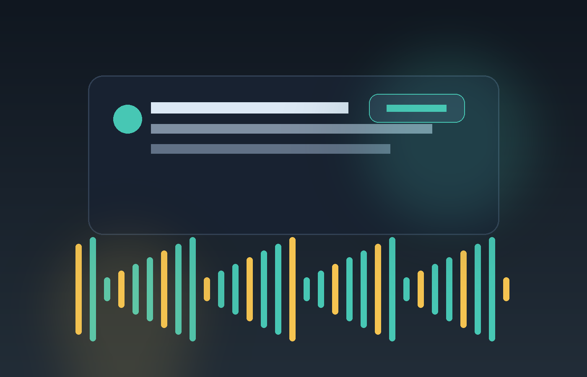

Windows 11 托盘通知增强器
让 Codex 完成任务时真正提醒你。
当你在听音乐、看视频或专注别的窗口时，Codex 完成通知很容易被错过。这个小工具会为 Codex 通知播放更明显的提示音，并可短暂降低其他应用音量。
portable 自包含版本，解压后运行，不需要另外安装 .NET。

Codex 完成任务
01
Windows 通知出现
02
提示音更明显
03
设计理由
不是替换 Codex，只是补上容易错过的提醒。
Codex 自己会发 Windows 通知，但在播放音乐时，系统通知声音可能不响、不明显，或者被其他声音盖过去。Codex Notification Booster 监听通知中心里的 Codex 通知，再由自己的进程播放提示音。
监听 Codex 通知
读取 Windows 暴露的通知元数据，识别 Codex 通知，不监控 Codex 进程。
额外提示音
识别到 Codex 通知后，由工具自己的进程播放更明显的提示音。
音频闪避
可在提示音播放时短暂降低其他应用音量，然后自动恢复。
可选开机自启
默认关闭。开启后写入当前用户 HKCU Run 启动项，关闭时会删除。
使用方法
下载，解压，打开 Codex 通知选项。
- 下载 GitHub Release 里的 zip。
- 解压整个 zip，打开 `win-x64` 文件夹。
- 在 Codex 设置中，把“轮次完成通知”设为“始终”。
- 双击 `CodexNotificationBooster.exe`，然后在系统托盘里右键打开菜单。
隐私和边界
本地运行，不上传通知内容。
- 日志保存在 `%LOCALAPPDATA%\\CodexNotificationBooster\\logs`。
- 正常日志不记录原始通知标题、正文、文本行或 XML。
- 不会修改系统主音量，不会提高 Codex 应用音量。
- 不创建 Windows 服务，不默认开机自启。